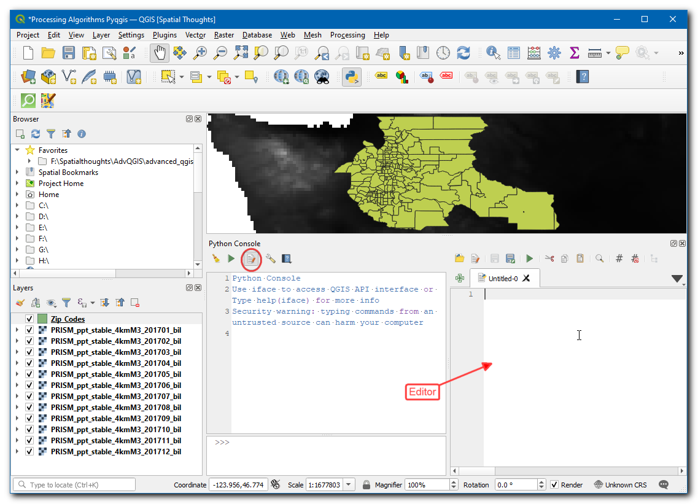
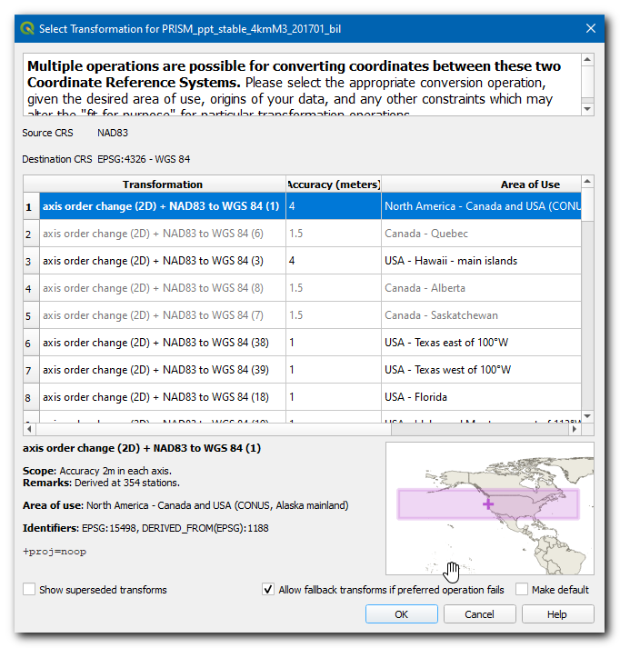
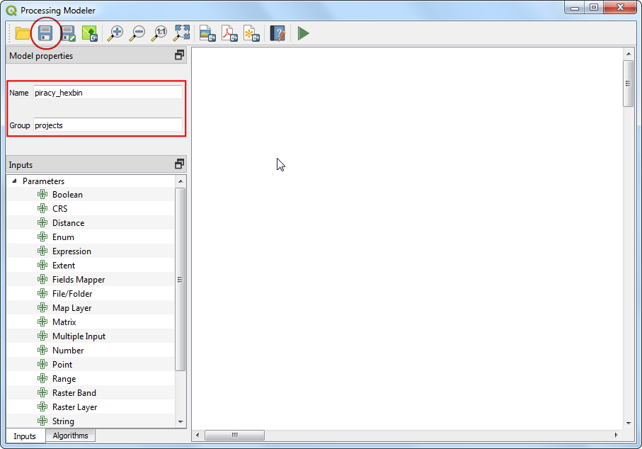
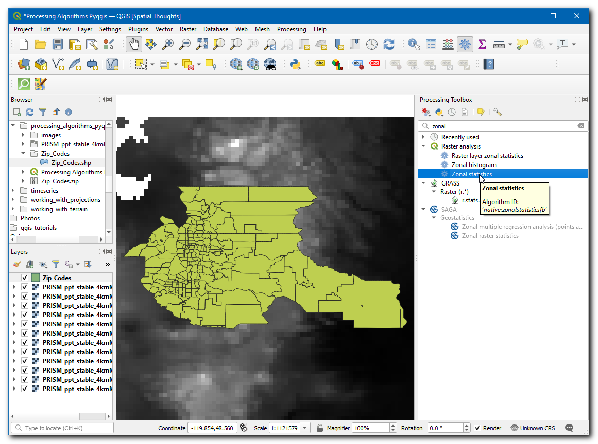
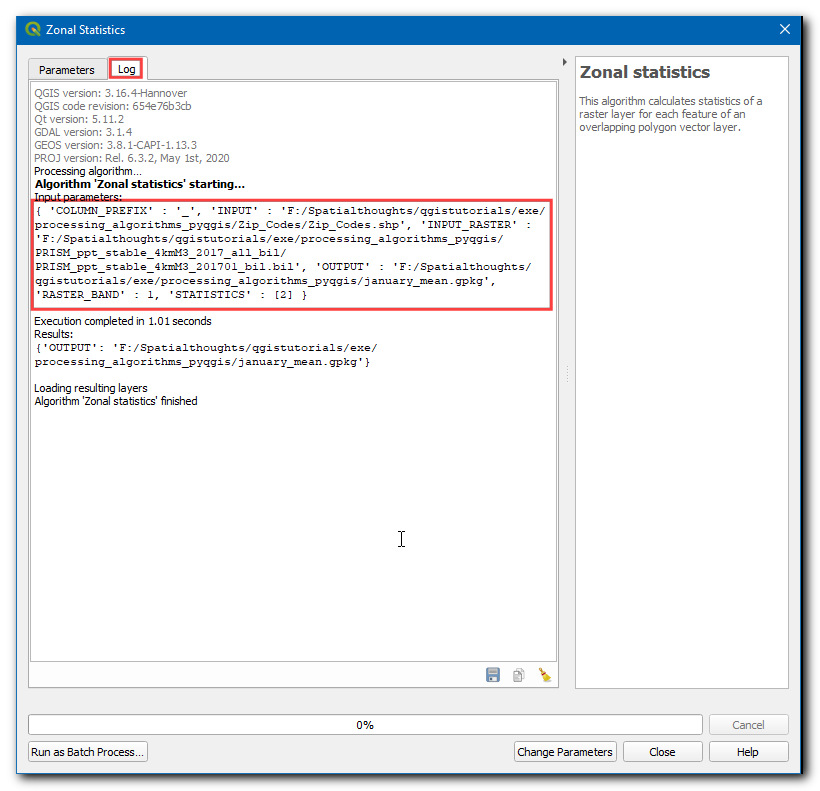
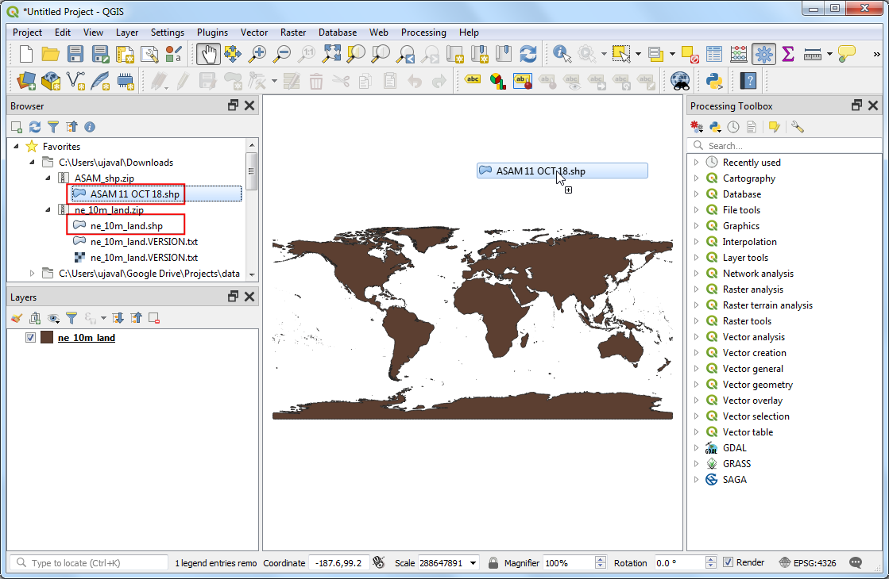

Vzorčenje rastrskih podatkov z uporabo točk ali poligonov (QGIS3)¶
Veliko znanstvenih in okoljskih podatkovnih nizov je na voljo v obliki rastrov z mrežo. Podatki o nadmorski višini (DEM) se prav tako razširjajo kot rastrske datoteke. V teh rastrskih datotekah je parameter, ki je predstavljen, kodiran kot vrednosti pikslov v rastru. Pogosto je treba izluščiti vrednosti pikslov na določenih lokacijah ali jih združiti na določenem območju. Ta funkcionalnost je na voljo v QGIS prek algoritmov za obdelavo. Sample raster values za točkovne sloje in Zonal Statistics za poligonske sloje.
Pregled naloge¶
Ob rastrski mreži najvišjih dnevnih temperatur v celinskih ZDA moramo izluščiti temperaturo v točkovnem sloju vseh mestnih območij in izračunati povprečno temperaturo za poligonski sloj vsakega okrožja v ZDA.
Česa se bomo še naučili¶
Izberite in odstranite več slojev iz kazala vsebine QGIS.
Pridobivanje podatkov¶
NOAA’s Climate Prediction Center zagotavlja podatke GIS <http://www.cpc.ncep.noaa.gov/products/GIS/GIS_DATA/>`_, povezane s temperaturo in padavinami v ZDA. Prenesite latest grid file for maximum temperatures. Datoteka se bo imenovala us.tmax_nohads_ll_{YYYYMMDD}_float.tif
Uporabili bomo datoteko CSV iz 2018 US Gazetteer, ki predstavlja mestna območja v ZDA. Prenesite datoteko Urban Areas Gazetteer File.
US Census Bureau zagotavlja TIGER/Line Shapefiles. Obiščete lahko spletno mesto FTP in prenesete datoteko shapefile popisnih enot za Kalifornijo. Prenesite datoteko Census Tracts for California.
Kopijo podatkovnih nizov lahko neposredno prenesete s spodnjih povezav:
us.tmax_nohads_ll_20190501_float.tif
Viri podatkov: [NOAACPC], [USGAZETTEER] [TIGER]
Postopek¶
Razpakirajte in izločite
2018_Gaz_ua_national.zipintl_2018_us_county.zipv mapo na vašem računalniku. Odprite QGIS in v brskalniku QGIS poiščite datotekous.tmax_nohads_ll_20190501_float.tifter jo povlecite na delovno površino.

Na plošči Layers boste videli naloženo novo rastrsko plast
us.tmax_nohads_ll_20190501_float. Ta rastrski sloj vsebuje najvišjo temperaturo, zabeleženo v vsakem pikslu, v stopinjah Celzija. Nato bomo naložili datoteko s točkami mestnih območij. Ta datoteka je na voljo kot besedilna datoteka v formatu TSV (Tab Separated Values). Kliknite gumb Open Data Source Manager v orodni vrstici Data Source Toolbar.

Preklopite na zavihek Delimited Text. Kliknite gumb … poleg File name in določite pot do prenesene besedilne datoteke. V razdelku File format izberite Custom delimiters in označite Tab. Izberite
INTPTLONGkot X polje inINTPTLATkot Y polje. Kliknite Add in nato Close.

Na plošči Layers bo naložen nov sloj točk
2018_Gaz_ua_national. Sedaj smo pripravljeni na pridobivanje vrednosti iz rastrskega sloja v teh točkah. Pojdite na .

Poiščite in najdite algoritem . Z dvoklikom ga zaženite.

Izberite
2018_Gaz_ua_nationalkot Input Point Layer. Izberiteus.tmax_nohads_ll_20190501_floatkot Raster Layer to sample. Razširite polje Advanced parameters in vnesitetmaxkot Output column prefix. Kliknite Run. Ko se obdelava konča, kliknite Close.

Na plošči Layers se naloži nova plast
Sampled Points. Izberite orodje Identify v orodni vrstici Attributes Toolbar in kliknite na katero koli točko. Atributi bodo prikazani na plošči Identify Results. Vsakemu elementu bo dodan nov atribut z imenom tmax_1. To je vrednost piksla rastrskega sloja, izluščenega na lokaciji točke. 1 predstavlja številko pasu rastra. Če je imel rastrski sloj več pasov, boste v izhodnem sloju videli več novih stolpcev.

Prvi del naše analize je končan. Odstranimo nepotrebne plasti. Držite tipko Shift in izberite sloje
Samplled Pointsin2018_Gaz_ua_national. Z desnim klikom in izbiro Remove ju odstranite iz sistema QGIS. Ko se pojavi poziv za Remove 2 legend entries?, izberite OK.

Zdaj bomo s plastjo grofije vzorčili raster in izračunali povprečno temperaturo za vsako okrožje. V brskalniku QGIS poiščite datoteko
tl_2018_us_county.shpin jo povlecite na delovno površino.

Na ploščo Layers bo naložen nov sloj
tl_2018_us_county. Pojdite na .

Poiščite algoritem in ga zaženite z dvojnim klikom.

Izberite
us.tmax_nohads_ll_20190501_floatkot Raster layer intl_2018_us_countykot Vector layer containing zones. Vnesitetmax_kot Output column prefix. Kliknite … poleg :guilabel:`Statistics to calculate.

Izberite samo vrednost
Meanin kliknite OK.

Now, click on the … next to Zonal Statistics and select Save to File option to save the output.

Browse to the folder where you want to save the output. Save the output layer as
us_county_tmax.shp. Click Run to start the processing. The algorithm may take a few minutes to complete and you will see the output layer added as soon as the processing finishes. Click Close.

Right-click the
us_county_tmaxlayer, and select Open Attribute Table.

You will see a new column called
tmax_meanadded in the attribute table. This contains the average temperature value extracted over the polygon for each feature. There are some null values because those counties (belonging to Alaska, Hawaii and Puerto Rico) are outside of the raster layer’s extent.

If you want to give feedback or share your experience with this tutorial, please comment below. (requires GitHub account)